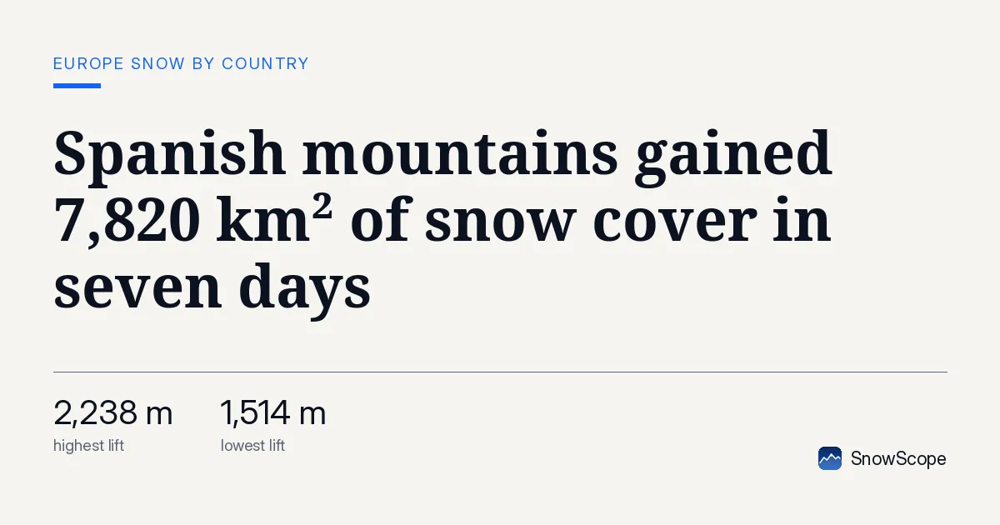
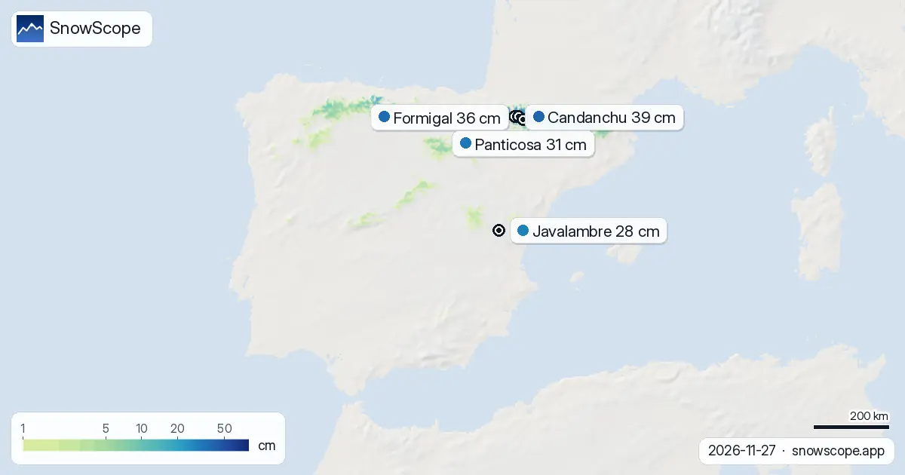

Spanish mountains gained 7,820 km² of snow cover in seven days
Spain's mountain snow cover has expanded dramatically. In just seven days, the white area across the country grew from 720 km² to 8,540 km², driven by substantial falls in the Pyrenees and northern ranges. The timing is striking: Candanchu, Formigal and Panticosa now hold depths far above what they would normally carry in late November.
See the live snow forecast for Candanchu in the SnowScope appSnow depth, powder alerts and the 3D map, free.
A week of transformation
The expansion tells a clear hydrological story. On 20 November, snow covered only a fraction of Spain's high terrain. By 27 November, the networked mountain zones between 1,500 and 5,000 m elevation had accumulated enough water to whiten 8,540 km² of the landscape. That jump of 7,820 km² represents a system that has recharged itself in days rather than weeks.
Three mountain chains bore the brunt of the fall. The Spanish Pyrenees accumulated 36 cm in 72 hours, the Cantabrian Mountains 22 cm, and the Galician highlands 11 cm. The Pyrenees—the highest and coldest of Spain's ranges—led the charge, as they typically do when Atlantic moisture arrives from the northwest.
| Day | White area | Most new snow in 3 days | Deepest resort |
|---|---|---|---|
| Saturday 21 November | 540 km² | 2 cm | Estació d'Esquí Baqueira-Beret |
| Sunday 22 November | 1,490 km² | 2 cm | Aramón Cerler |
| Monday 23 November | 990 km² | 2 cm | Estació d'Esquí Baqueira-Beret |
| Tuesday 24 November | 10,560 km² | 8 cm | Formigal |
| Wednesday 25 November | 15,840 km² | 16 cm | Candanchu |
| Thursday 26 November | 10,800 km² | 19 cm | Candanchu |
| Friday 27 November | 8,540 km² | 16 cm | Candanchu |

Where the water is stored now
The band between 2,000 and 2,500 m holds an average of 9 cm across Spain, with 73 per cent cover in this zone. Above 2,500 m, depths reach 13 cm on average across 68 per cent of the area. These are the elevations where snow will persist longest as winter deepens; they are the reservoir tiers of the Spanish high mountains.
Below 2,000 m, storage is sparse. The 1,500–2,000 m band shows only 2 cm average depth and 34 per cent cover—patchy, vulnerable to thaw. This is early-season snow at an awkward height, where freeze-thaw cycles and solar radiation will test its longevity.

Resorts holding well above average
Among the 31 resorts across Spain, 26 now report measurable snow. Candanchu leads with 39 cm, more than double its usual depth for late November. Formigal holds 36 cm (133 per cent of normal), and Panticosa 31 cm—a striking 443 per cent above the typical late-November value of 7 cm at that site. These Pyrenean stations sit at 2,200–2,264 m, the zone where the recent fall has accumulated most.
Javalambre, farther south in the Iberian chain, holds only 28 cm despite receiving just 1 cm in the past 72 hours. Its lower elevation and more continental setting mean less moisture and faster evaporation. Espot, in the Catalan Pyrenees, carries 23 cm—below normal for its height—having caught less of the Atlantic flux.
The brief respite ahead
The next three days will see minimal accumulation: only 1–2 cm forecast across the country, with 29 November as the most active day at 2 cm. The snowfall pulse is exhausting itself. After 30 November, the forecast thins further: 1 cm maximum over the following week.
However, the broader picture shifts by early December. Between 5 and 11 December, the Forecasts signal up to 13 cm of potential snow across certain zones, though this lies beyond the firm forecast horizon and carries greater uncertainty.
The mountain water balance now
From a hydrological perspective, this event marks the transition from autumn to genuine mountain winter. The fall has injected stored precipitation into the highest elevations, where it will remain solid through December and January. For Spanish river systems fed by snowmelt—the Ebro, the Duero, the Tagus—this snow pack represents future water supply, compressed into the coldest hours of the year.
Yet the thaw zone (1,500–2,000 m) remains vulnerable. Its thin, patchy cover will respond to any warming spell, releasing water downslope before the year ends. Only the deep cold and the high elevations guarantee that this week's gift will survive to spring.
Neighbours and context
Andorra, Spain's mountain neighbour to the northeast, enjoys more extensive coverage at 84 per cent white share and shows deeper snow at its leader, Canaro, with 23 cm. France's Alpine and Pyrenean slopes carry a mixed picture: La Grave in the southern Alps holds 158 cm, but the national average remains modest at 24 per cent cover. Spain's transformation, though dramatic on its own scale, sits in the shadow of the deeper, more reliably snowy French ranges.
Tips for skiers
- The best snow depth and coverage now lies above 2,000 m. Plan routes and days to maximise time on upper slopes, where persistence is highest.
- Early-season snow between 1,500 and 2,000 m is patchy and thin; expect rocks and variable conditions, especially on south-facing slopes. Ski conservatively in this band.
- Check the official avalanche bulletin before any off-piste venture; the recent 36 cm fall in the Pyrenees and 22 cm in the Cantabrians may have loaded steep terrain.
- Candanchu, Formigal and Panticosa lead the country for depth. All three sit at 2,200+ m and have captured the Atlantic storm well.
- Minimal fresh snow arrives over the next week. The snow cover you see on 27 November will largely define your conditions through 1 December; plan accordingly.
About these numbers
Resort snow depths are the deepest snow on the resort's upper slopes on the date shown; they are estimates for an area, not a measurement at one point. Forecasts can change. Always read the official avalanche bulletin before going off-piste.
Cite this report
For research, teaching or the press: the numbers and charts are free to reuse under CC BY 4.0 with this citation.
SnowScope (2026), Spanish mountains gained 7,820 km² of snow cover in seven days, https://snowscope.app/blog/en/2026/11/spain-snow-cover-gain-this-week-27-november-2026.html, accessed 2026-11-27
SnowScope (Atlas Labs). (2026, November 27). Spanish mountains gained 7,820 km² of snow cover in seven days. SnowScope snow reports. https://snowscope.app/blog/en/2026/11/spain-snow-cover-gain-this-week-27-november-2026.html
BibTeX
@misc{snowscope2026spainsnowcovergainthiswe,
author = {{SnowScope (Atlas Labs)}},
title = {Spanish mountains gained 7,820 km² of snow cover in seven days},
year = {2026},
month = nov,
howpublished = {\url{https://snowscope.app/blog/en/2026/11/spain-snow-cover-gain-this-week-27-november-2026.html}},
note = {Published 2026-11-27 10:44 UTC; accessed 2026-11-27}
}· CC BY 4.0 · Methods, data and tools →
Candanchu: snow and temperature by height, this winter vs last (tools) →
Follow Candanchu
Free: a message when fresh snow is coming, and the forecast every morning.
More snow reports

From 13 to 19 November 2026 Slovenia got the most snow and kept it; Serbia and Croatia had a deep but short white weekend; Montenegro only on Durmitor; Bulgaria almost none. The ranking, with links to each country report.

Snow is falling on Slovenia's ski mountains today: about 37 cm on Kanin and 21 cm on Krvavec. Where the snow lies, how it compares with past winters, and the next snowy day.

Tornik on Zlatibor had up to 39 cm on its upper slopes on 15 November 2026; by Wednesday it had melted. Kopaonik barely turned white. The week day by day and what comes next.